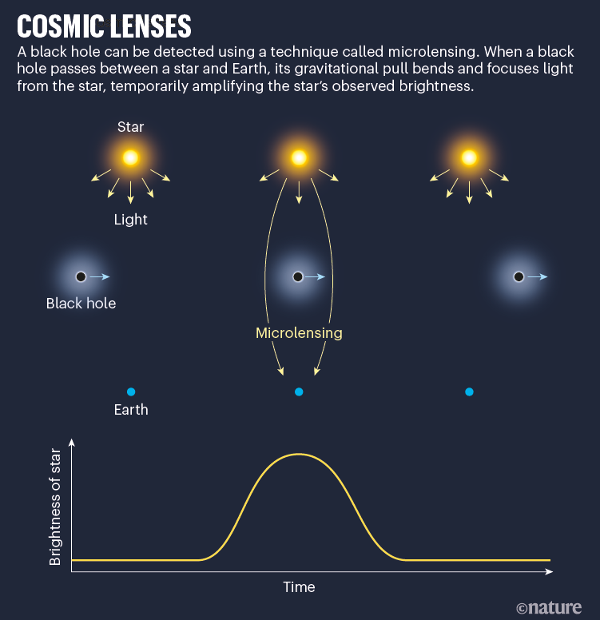

.jpg)
Black holes are among the strangest objects in the universe.There gravitational pull is so high that nothing can escape from them - not even light.
Most black holes are formed when a massive star runs out of fuel{hydrogen(H)/ Helium(He)} and die in explosion.The dead star's core - unable to resist it's own crushing force of gravity - collapses,shrinking in milliseconds until it is infinitely smaller than an atom. The core becomes singularity: an object so impossibly small that it has 0 size but infinite density.Anything staying within a certain distance of singularity is doomed to get pulled in by gravity and dissappear forever. The point of no return forms a spherical boundary around the singularity called an event horizon, which marks how close you can safely go.
There are 2 types of Black hole :- stellar and supermassive. Stellar blackholes form when enormous star explode as supernova and dies. Supermassive blackholes are bigger and are found at the centre of galxies, often surrounded by the whirlpool of intensely hot, glowing matter.
Black holes are rarely studied in detail. Instead, they are studied in detail by astronomers and physicists.
The gravitational pull of a black hole rises so steeply nearby that an astronaut falling into one would be stretched like spaghetti and torn apart.
.jpg)
Black hole have such powerful gravity that they bend light like giant lenses.If Earth orbited a blackhole , an observer would see a highly distorted image of the planet. According to Sir Albert Einstein's theory of relativity,blackholes also slow down time. If an astronaut spent only an hour near the blackhole he might return to earth an dfind out that many years had been passed.
Einstein's theory of relativity says that massive objects bend the four combined dimensions of space & time(space-time). Some experts have speculated that black hole migth wrap up space -time so much that they could create shortcuts called wormholes, between different parts of universe or different times. THERE IS NO EVIDENCE THAT WORMHOLES REALLY EXIST
.jpg)